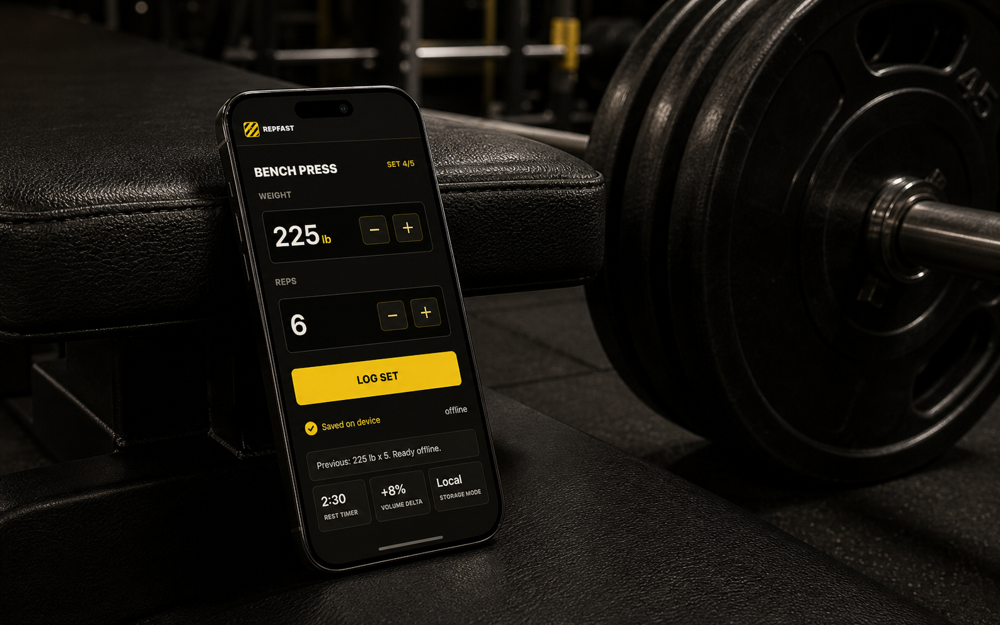

Too many screens
Menus, builders, feeds, and prompts get between the lifter and the only numbers that matter during a set: weight and reps.
Offline strength tracking
RepFast is a yellow-and-black gym-floor logger built around one promise: capture the set in under 10 seconds, even when signal is gone and the next plate decision is already due.
Weight
Reps

The gap
RepFast skips social feeds, coaching clutter, login walls, and spreadsheet views. It is a serious logging instrument for the exact moment when the lifter has shaky hands, poor signal, and no patience for navigation.
Menus, builders, feeds, and prompts get between the lifter and the only numbers that matter during a set: weight and reps.
A basement gym should not break the log. V1 stores sessions locally and treats offline as normal.
History is useful later. During a workout, the app should answer one question fast: did this beat last time?
Product idea
Open, lift, log, compare. RepFast remembers the last values, keeps controls oversized, starts rest automatically, and turns the result into a plain performance verdict.
No home feed. No signup wall. The next planned exercise is already on screen.
Weight and reps prefill from last time. Most sets need one tap.
Logging a set starts the clock and keeps the next action visible.
The payoff is not a chart hunt. It is a simple today-vs-last-time answer.
Real gym moment
The lifter racks 225 after a hard sixth rep. RepFast opens straight to Bench Press, shows 225 x 5 from the last session, lets them bump reps to 6 with one thumb, and immediately says volume is up.
CSV-powered progress dashboard
Training effort becomes evidence once the KAN-29 export leaves the phone. The dashboard turns workout_date, exercise, volume, and rest_since_previous_set_seconds into a clean answer: what is improving, what is stable, and why the next session is worth logging.
First-version mobile app
V1 stays narrow: offline workout logging, previous-set defaults, oversized weight and rep controls, auto-rest timing, and a compact performance card.
Weight
Reps
Previous: 225 x 5. Defaults loaded locally.
Timer starts automatically when the set is logged.
Best set improved. Total session volume is up without adding extra exercises.
New bench PRRoadmap
Local workout history, exercise list, previous-set defaults, log button, auto-rest timer, and today-vs-last-time card.
Cloud backup becomes opt-in after the core loop is trusted. The gym-floor experience remains offline-capable.
Kg/lb preference, rest-duration insights, plate calculator, optional RPE, and simple progression prompts that do not clutter the logging screen.
Later input modes for chalky hands and phone-free sets, only after the manual loop is fast enough to beat paper.
Positioning
No signup, no social feed, no coaching clutter. Open, lift, log, compare.